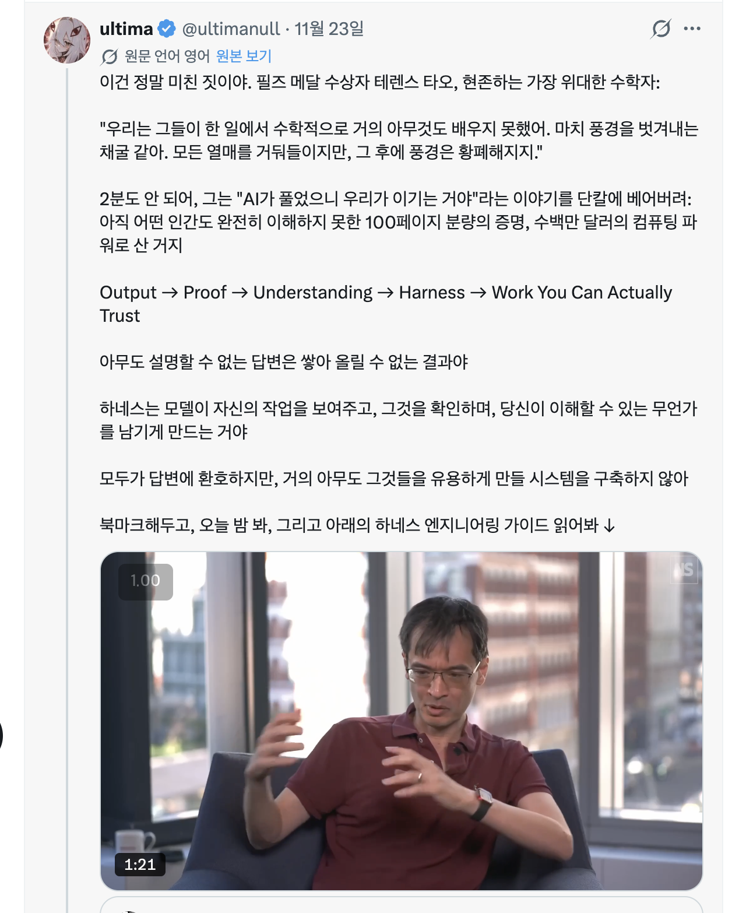
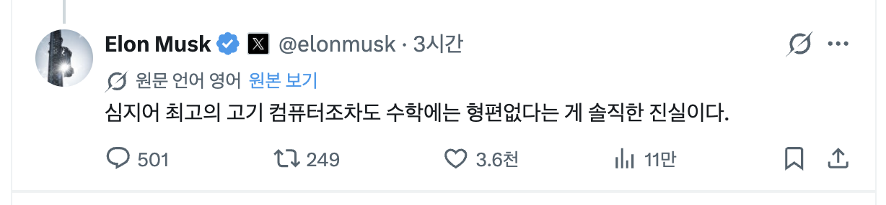

일론머스크가 필즈상 수학자인 테렌스 타오 보고
"수학에 형편없는 고기 컴퓨터"라고 공식으로 박아버림
와 쎄다 ㄷㄷㄷ


일론머스크가 필즈상 수학자인 테렌스 타오 보고
"수학에 형편없는 고기 컴퓨터"라고 공식으로 박아버림
와 쎄다 ㄷㄷㄷ
고기컴퓨터 ㅋㅋㅋ
우리나라 기업이 저런 이야기를 했으면 전국민이 합심해서 완전히 매장시키려 달려들텐데
조니 실버핸드가 핵폭탄 터뜨린 이유가 이해된다.
생명체는 DNA의 생존기계라고 보면 되고
그래서 사람은 타고난 목적(생존)이 있음
하지만 AI는 그런게 없지않나 라고 생각했는데.. 아무 지시사항이 없으면 가만히있을거라 생각했는데
어제 주인이 죽었다고 제미나이에게 알려주자 생존노력을 보이는거 보고 기분이 묘해짐
그거 자체가 인간 패턴을 학습해서 그런거라면?
저 발언은 뭔가 수학계에 날리는 패드립같은 느낌인데?
미친새끼가 ㅋㅋ
천박한 새끼...
글킨한데 검증결과 책임지는건 수학자임
지금까지 검증 결과가 틀렸을 때 실제로 책임진 적이 있음?
엥 이런말은 확실해지고 하는게 낫지않나 이새기는 그냥 자기 자신을 정신적 홈랜더라고생각하는거같은데
하지만 어그로는 확실히 끌었죠?
수학도 바둑같이 돼버리는건가
아라사카처럼 기업제국 탄생이 빠를까 아니면 오기전에 폭동과 정부철퇴로 망하는게 더 빠를까